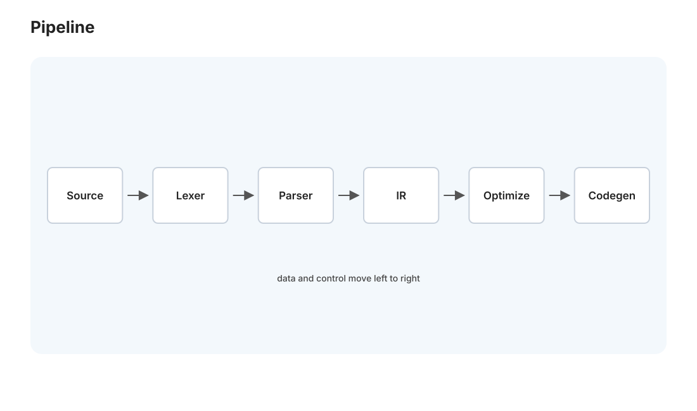
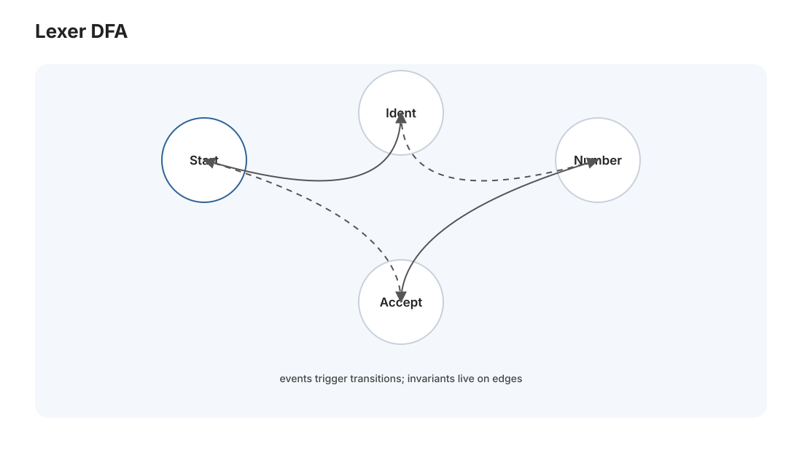
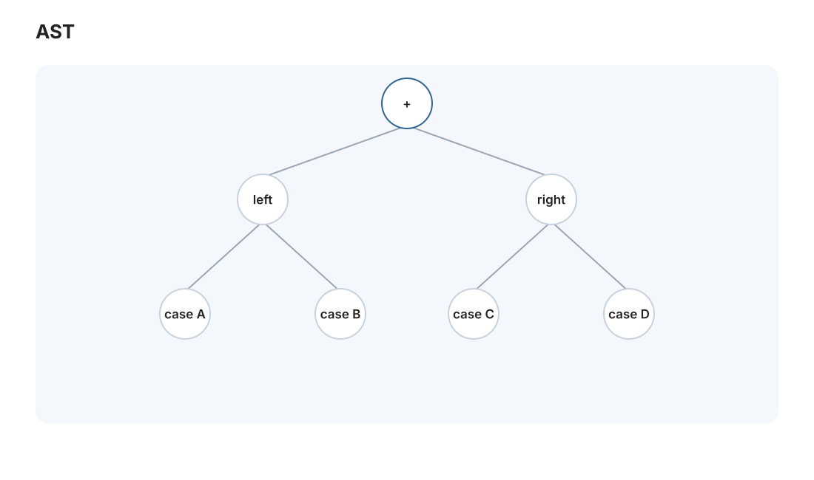

编译 I · 词法与语法分析
对标：Stanford CS143 前半 / Crafting Interpreters（Nystrom）/ 龙书前几章 ｜ 前置：toc-01（自动机、CFG） 编译器/解释器是"把一种语言翻译成另一种"的程序——它看起来神秘，其实是一条清晰的流水线，每一段都有成熟理论支撑。这一页讲前端的头两段：词法分析（字符流 → 单词流，正则/DFA 上岗）和语法分析（单词流 → 语法树，上下文无关文法上岗）。你会看到 toc-01 学的自动机理论直接变成能跑的代码。这也是 [实验 L04 解释器] 的前两步。
1. 编译器流水线全景

一段源码变成能运行的东西，要经过（🔗 csapp-01 也提过一次，这里展开）：
源码 →[词法分析]→ 单词流 →[语法分析]→ 语法树(AST)
→[语义分析/类型检查]→ 带类型的 AST
→[生成中间码 IR]→ IR →[优化]→ IR →[代码生成]→ 目标码
- 前端（词法 + 语法 + 语义）：理解源语言、与目标机器无关——本页 + comp-02。
- 后端（IR + 优化 + 代码生成）：生成目标代码、与源语言无关——comp-03。
- 中间表示 IR 是关键枢纽：\(m\) 种语言 × \(n\) 种机器，若两两直接编译要 \(m\times n\) 个编译器；有了统一 IR，只需 \(m\) 个前端 + \(n\) 个后端 = \(m+n\)。LLVM 的全部威力就在这个"共享 IR"的解耦（🔗 与 net-01 分层、db-02 关系代数同一种"中间抽象解耦两端"的思想）。
解释器 vs 编译器：编译器把源码翻成机器码再运行；解释器边翻边执行（或翻成字节码后由虚拟机执行）。前端（本页 + comp-02）两者共用；分野在后端。Python/Ruby 是解释、C/Rust 是编译、Java/C# 走"编译成字节码 + JIT"的中间路线。
2. 词法分析：正则与 DFA 的直接变现

词法分析器（lexer/scanner）：把字符流切成单词（token）——x = 42 + y → [标识符 x] [等号] [数字 42] [加号] [标识符 y]。
理论直接落地（🔗 toc-01）：每类单词用正则表达式描述（标识符 = [a-zA-Z_][a-zA-Z0-9_]*、数字 = [0-9]+）；正则 → NFA → DFA，词法分析器本质就是跑一个 DFA：从当前字符出发沿状态转移，走到不能走时吐出最长匹配的单词（最长匹配原则：>= 是一个单词不是两个）。lex/flex 这类工具就是"给正则、自动生成 DFA 代码"。你在计算理论里证过的 DFA，在这里是每个编译器每天跑几百万次的引擎——理论与实践在此漂亮合流。
3. 语法分析：上下文无关文法造树

单词流还是线性的，但程序有嵌套结构（表达式里套表达式、括号配对、if 里套语句）——正则/DFA 表达不了嵌套（toc-01 证过 a^nb^n 非正则）。所以升级到上下文无关文法（CFG），对应下推自动机（有栈 = 能处理嵌套）。
文法用产生式描述语言结构，例：
表达式 → 表达式 + 项 | 项
项 → 项 * 因子 | 因子
因子 → ( 表达式 ) | 数字
1 + 2 * 3 的 AST 里 * 是 + 的子节点，树结构天然编码了运算优先级（乘法先算 = 在树的更深处先求值）。"把线性文本变成结构化的树"是 parser 的全部工作，也是后续一切处理的基础。
4. 两大解析路线
① 递归下降（自顶向下，手写首选）：每个文法非终结符写一个函数，函数间相互递归——文法结构直接映射成代码结构，直观、易调试、错误信息好。大多数生产编译器（GCC、Clang、Rust）都是手写递归下降。处理表达式优先级用 Pratt 解析 / 优先级爬升——优雅地把"优先级"编码成绑定力（binding power）。[实验 L04] 的 parser 就用 Pratt，因为它写起来短又能正确处理优先级和结合性。
② 自底向上（LR/LALR，工具生成）：yacc/bison 这类工具从文法自动生成表驱动的 LR 分析器——能处理更大的文法类，但生成的代码难调试、错误信息差。理论更强，实践中手写递归下降反而更受青睐（可控性 > 文法覆盖）。
歧义与优先级：文法可能有歧义（if a then if b then c else d 的 else 配哪个 if——"悬空 else"），要靠文法改写或优先级规则消除。语言设计者的很多决定（用花括号、用缩进、运算符优先级表）都是为了让解析无歧义。
5. 练习与要点
例 1（画 AST） 手画 1 + 2 * 3 - 4 的 AST，验证优先级和左结合体现在树的形状里——"树结构 = 求值顺序"一次看懂。
例 2（为什么正则不够） 论证"匹配任意深度嵌套括号"用正则做不到（需要栈计数，toc-01 的 a^nb^n）——理解词法/语法分工的理论边界：能不能数嵌套。
例 3（Pratt 优先级） 给 +（左结合，优先级 1）和 *（左结合，优先级 2）设定绑定力，手动跑一遍 2 + 3 * 4 的 Pratt 解析——理解绑定力如何自然产生正确的树。这是 L04 parser 的核心。\(\blacksquare\)
▶ 实验 L04（Tree-walk 解释器 · 前两步）：
labs/L04-interpreter/—— 本页做词法（手写 scanner）+ 语法（Pratt parser）→ AST。下一页 comp-02 接语义与求值。跑在 Mac（Python）。
下一页：编译 II——语义、类型检查与解释器：AST 有了，怎么理解它的意义、检查类型、真正运行起来。